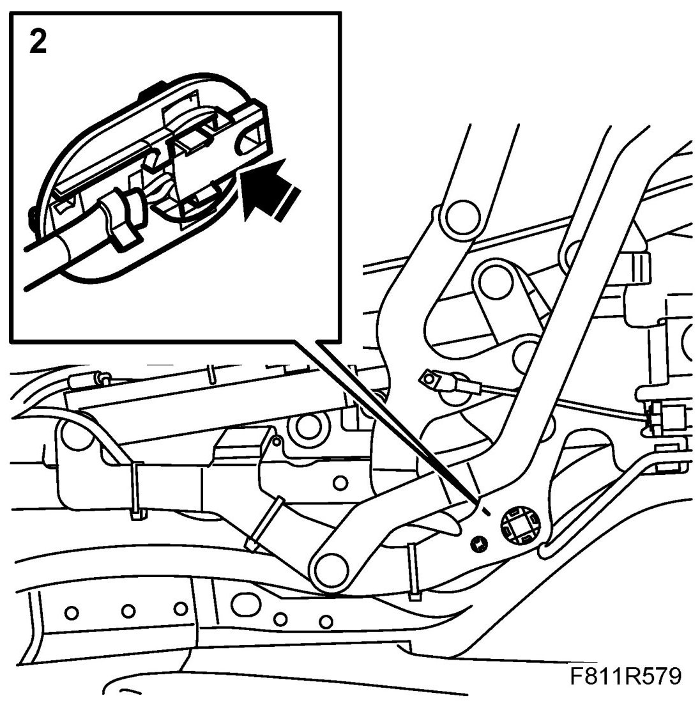
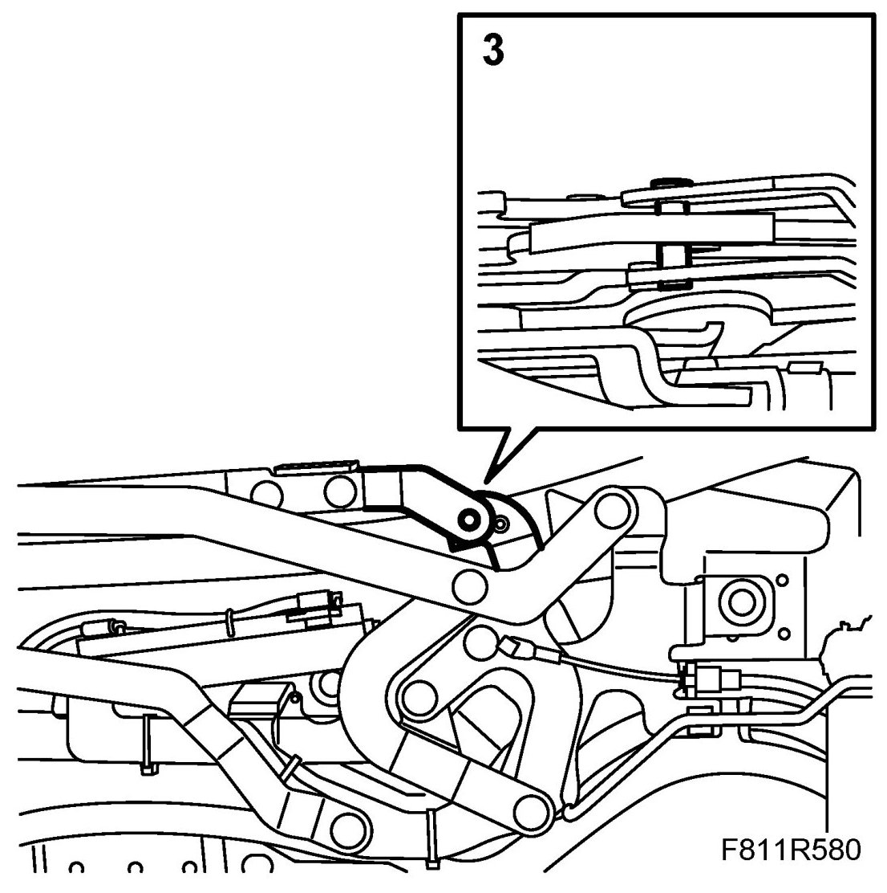
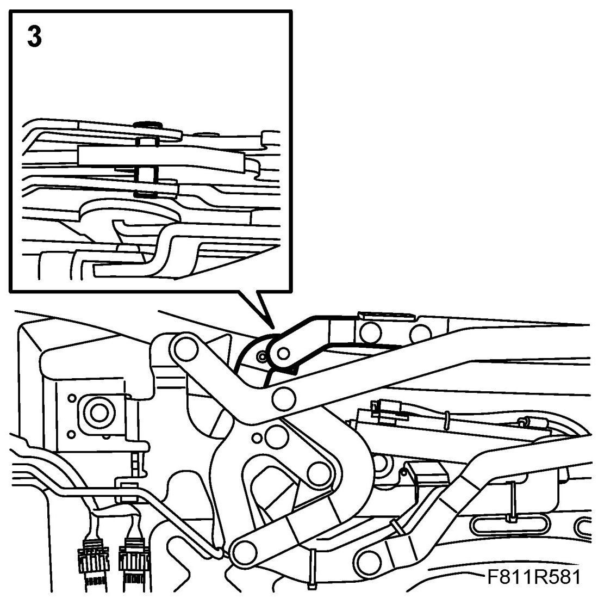
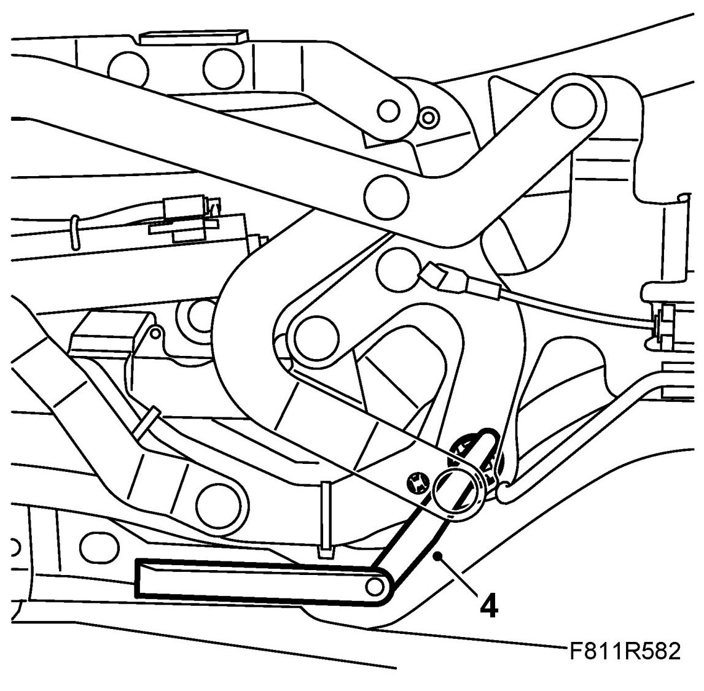
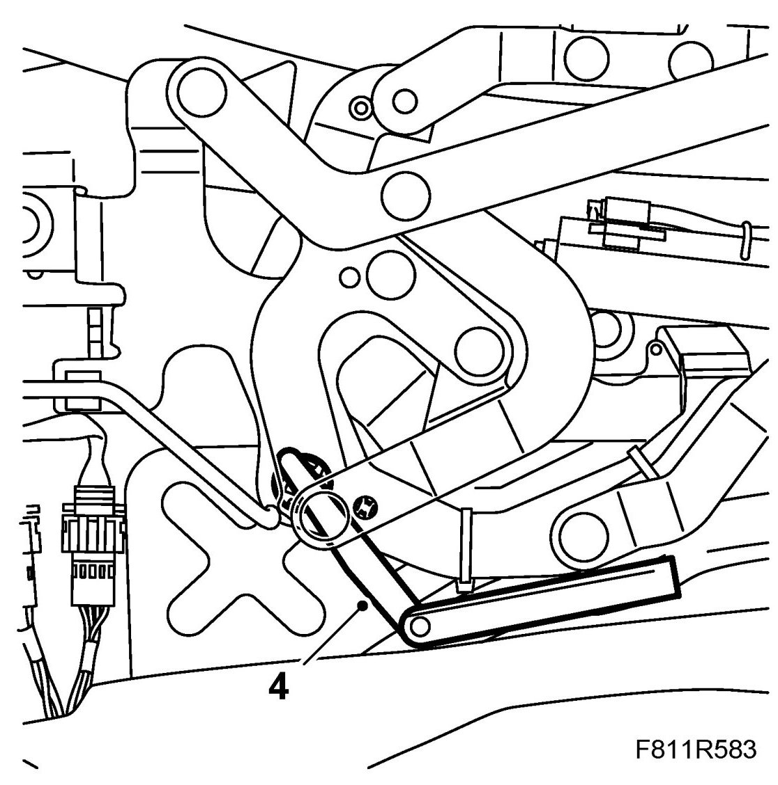

Position Sensor, Soft Top Locked, Check
Position Sensor, Soft Top Locked, Check
1. Remove Soft top cover.
2. Check that the sensor is correctly fitted in the holder and that the sensor has not moved backward.

WARNING: Take care when manoeuvreing the hinge manually. Risk of pinching and subsequent injury.
3. Guide the hinges to closed and locked position by moving them manually.
Right-hand side:

Left-hand side:

4. Measure the distance between the position sensor and the hinge using a feeler gauge.
Right-hand side:

Left-hand side:

5. If the distance between the position sensor and hinge is more than 1.9 mm, replace the holder. See Position sensor, soft top locked (562LH/RH).
6. Fit the soft top cover.